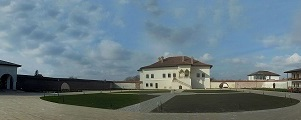

Obiective Culturale Dâmbovița
Palatul Brâncovenesc | Istoric
În trecut Potlogiul era traversat de drumul principal de circulație ce lega Bucureștiul de Târgoviște și Craiova. Acest lucru l-a determinat pe domnul Țării Românești, Constantin Brâncoveanu în anul 1698 să ridice în centrul localității un frumos palat spre a fi lăsat moștenire fiului său Constantin, după cum grăiește pisania așezată pe fațada de sud a palatului: „Aceste case din temelia lor sunt înălțate de luminatul domn, Io Constantin Basarab Voievod fiului său Constantin Brâncoveanul, începându-le și sfârșindu-le la leat 7206 (1698) și la al zecelea an al domniei sale, ispravnic fiind Mihai vtori postelnic Corbeanul”.
Această inscripție de consacrare (pisanie) este unul dintre puținele elemente păstrate din edificiul original. Este decorată cu un frumos vultur valah, este scrisă în grafia chirilică locală, folosită în Valahia și Moldova până la reforma alfabetului de la mijlocul sec. 19. Aceasta menționează în inițiale la colțuri numele și titlul fondatorului Palatului Potlogi: “Io [Eu/ salutare, etc.], K [Constantin], B [Brâncoveanu], V [Voievod]“.
Curtea
Curtea palatului este de formă rectangulară, fiind străjuita la nord de albia fostului heleșteu, iar pe celelalte trei laturi de un zid de incintă. Această curte a fost împărțită după obiceiul vremii în trei segmente, separate între ele prin ziduri și clădiri anexe: curtea de primire care leagă poarta principală de incinta palatului, curtea de serviciu, destinată gospodăriei, iar la nord între palat și heleșteu se aflau grădinile palatului.
Palatul
Principala construcție a curții, palatul (care măsoară 32 metri în lungime și 23 lățime[3]), este o construcție de plan dreptunghiular în a cărei compunere intră o pivniță boltită, un parter și un etaj. Pivnița este o construcție vastă, acoperită de patru calote sferice sprijinite pe un stâlp central prin intermediul pandantivilor. Parterul este alcătuit din trei încăperi spațioase și alte două mai reduse ca dimensiuni. Accesul la etaj se face prin foișorul deschis, situat pe fațada sudică, de aici se intră într-o cameră prelungă ce separă cele două apartamente inegale, cel al domnitorului, de dimensiuni mai mari în stânga și cel al doamnei în dreapta, în partea central nordică a etajului se află loggia, iar în mijlocul acestuia se află o cameră de formă pătrată, așa numită a chelarului, după cum ne relatează Paul de Alep, secretarul domnitorului, unde erau ținute lucrurile de valoare în lipsa stăpânilor casei. Încăperile de la etaj au tavanele acoperite de bolți mănăstirești cu lunete și pereți ce păstrează frumoase stucaturi cu motive florale, în trecut acești pereți erau decorați și cu picturi murale astăzi total distruse. La exterior, palatul este tencuit și păstrează fragmentar un decor în stuc asemănător celui din interior.